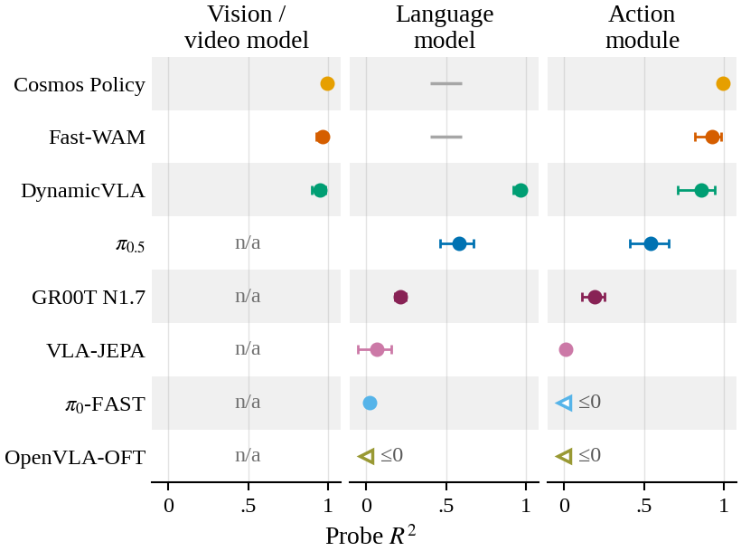
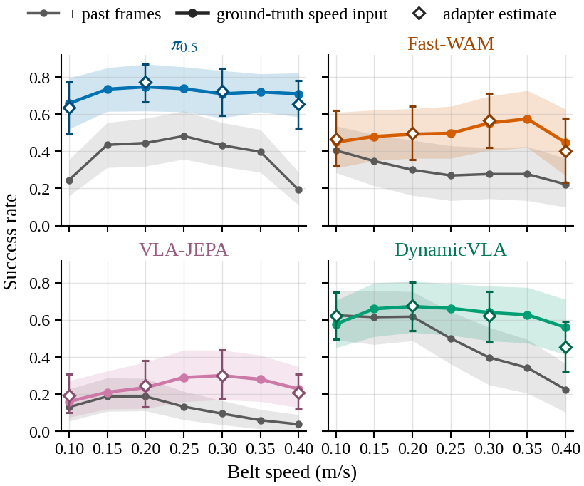

TL;DR. We introduced SWEEP-Bench, a benchmark of 80 conveyor tasks at 13 belt speeds. Many fine-tuned policies tend to produce actions suited to the average demonstration speed, and our results suggest that past frames widen the speed range only for those pretrained on multiple frames. An estimated speed recovers most of the gain that policies obtain from the ground-truth speed.
Abstract
Robot policies must adapt to the speed of moving objects, yet existing benchmarks rarely measure this ability across diverse tasks and speeds. We introduce SWEEP-Bench, a simulation benchmark with 80 conveyor-belt manipulation tasks spanning 16 skill categories, each evaluated at 13 belt speeds (0.10–0.40 m/s). Objects are transported through physical contact with a visibly moving belt. Each task has a static counterpart, and each evaluation episode uses the same randomized scene at all 13 speeds. We fine-tune eight vision-language-action and world-action models on demonstrations spanning the full speed range, comparing observations from the current frame alone with those including two past frames. For six models, the success rate peaks at intermediate speeds, and their failures indicate that they tend to produce actions suited to the average demonstration speed rather than to the actual one. Past frames raise the success rate by 10–40 percentage points for three models, and linear probes show that the belt speed is also most linearly decodable from these three. Adding ground-truth speed input to four of the models improves all of them, and a speed estimated from the images keeps most of this gain. These results show that SWEEP-Bench exposes speed-dependent failures and suggest that past frames help only policies from which the speed is most decodable, such as those pretrained on multiple frames.
Benchmark
80 conveyor tasks in 16 skill categories, each run at 13 belt speeds from 0.10 to 0.40 m/s. Every evaluation episode uses the same scene at all speeds, so only the speed changes.
Show all 80 tasks
† and ‡ mark the 20- and 40-task subsets.
Results
Most policies do best at mid-range speeds
We fine-tune eight models on demonstrations at all speeds, with the current camera frame alone or with two past frames added. Six of them succeed most often in the middle of the speed range and less often at both ends. DynamicVLA and Fast-WAM do best near the slowest speed.
Past frames help only three models
Past frames raise the success rate of Fast-WAM, Cosmos Policy and DynamicVLA by 26.4, 9.6 and 39.5 points, while the other five change by −5.6 to +0.9 points. A linear probe reads the belt speed well from these three models, and much less from the others, even before fine-tuning.

How well a linear probe reads the belt speed from each part of each policy (R², on held-out tasks).
Giving the policy the belt speed helps, even an estimated one
With the true belt speed as an extra input, four policies gain 12 to 34 points on a 20-task subset. A speed estimated from two camera images keeps most of that gain.

How policies fail
The six models that peak fail in opposite ways at the two ends. At 0.10 m/s, 48% of their episodes fail because the policy acts before the object arrives; at 0.40 m/s, 69% fail because it acts after the object has passed. They tend to time their actions for the average demonstration speed.
- Success
- The episode succeeds.
- Too early
- Acts before the object arrives.
- Too late
- Acts after the object has passed.
- Other failure
- On time, but misses, drops or misplaces it.
For this task a room object stood between the recording camera and the robot; the policies' cameras did not see it. Clips marked “re-rendered” replay the logged actions with that camera moved closer; the others show the original view.
Without past frames, DynamicVLA and Fast-WAM fail above the slowest speed
Real robot
On a real conveyor, π0.5 closes its gripper at about the same spot at 0.05 and 0.20 m/s, too early for the slow sponge. Fast-WAM follows the sponge at 0.05 m/s but is too late at 0.20 m/s. With the belt speed as input, π0.5 scores 80, and 66 with the estimated speed, against 31 without it.
Policy input, 224 × 224 (padding cropped)Policy input, 224 × 224Head camera, both policies with past frames. Each clip is the trial nearest the median gripper-closing time of its 10 trials (Fast-WAM never closes at 0.20 m/s, so its middle trial is shown).